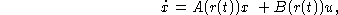
where A is 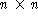 and B is  . The scalar
parameter r(t) is a continuous-time Markov process taking values in
a finite set 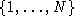 .
. The scalar
parameter r(t) is a continuous-time Markov process taking values in
a finite set 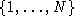 .
The transition probabilities of the process r are defined by a ``transition matrix'' 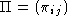 , where 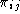 's are the transition probability rates from the i-th mode to the j-th. Such systems, referred to as ``jump linear systems'', can be used to model linear systems subject to failures.
We seek a state-feedback control law such that the resulting closed-loop system is mean-square stable. That is, for every initial condition x(0), the resulting trajectory of the closed-loop system satisfies 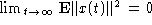 .
The control law we look for is a mode-dependent linear state-feedback,
i.e. it has the form u(t) = K(r(t))x(t); K(i)'s are  matrices (the
unknowns of our control problem).
matrices (the
unknowns of our control problem).
It can be shown that this problem has a solution if and only if
there exist matrices 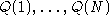 , and  matrices 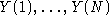 , such that
matrices 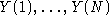 , such that
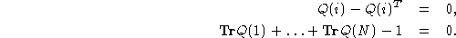
and
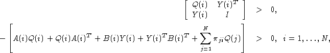
If such matrices exist, a stabilizing state-feedback is given by 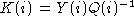 , 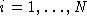 .
In the above problem, the data matrices are 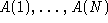 ,
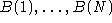 and the transition matrix . The unknown
matrices are Q(i)'s (which are symmetric matrices) and
Y(i)'s (which are  matrices). In this case, both
the number of the data matrices and that of the unknown matrices
are a-priori unknown.
matrices). In this case, both
the number of the data matrices and that of the unknown matrices
are a-priori unknown.
The above problem is obviously a  problem. In this case,
we can let XLIST be a list of two lists: one representing
the Q's and the other, the Y's.
problem. In this case,
we can let XLIST be a list of two lists: one representing
the Q's and the other, the Y's.
The evaluation function required for invoking lmisolver can be constructed as follows:
function [LME,LMI,OBJ]=jump_sf_eval(XLIST)
[Q,Y]=XLIST(:)
N=size(A); [n,nu]=size(B(1))
LME=list(); LMI1=list(); LMI2=list()
tr=0
for i=1:N
tr=tr+trace(Q(i))
LME(i)=Q(i)-Q(i)'
LMI1(i)=[Q(i),Y(i)';Y(i),eye(nu,nu)]
SUM=zeros(n,n)
for j=1:N
SUM=SUM+PI(j,i)*Q(j)
end
LMI2(i)= A(i)*Q(i)+Q(i)*A(i)'+B(i)*Y(i)+Y(i)'*B(i)'+SUM
end
LMI=list(LMI1,LMI2)
LME(N+1)=tr-1
OBJ=[]
Note that LMI is also a list of lists containing the values
of the LMI matrices. This is just a matter of convenience.
Now, we can solve the problem in Scilab as follows (assuming lists A and B, and matrix PI have already been defined).
First we should initialize Q and Y.
--> N=size(A); [n,nu]=size(B(1)); Q_init=list(); Y_init=list(); --> for i=1:N, Q_init(i)=zeros(n,n);Y_init(i)=zeros(nu,n);endThen, we can use lmisolver as follows:
--> XLIST0=list(Q_init,Y_init) --> XLISTF=lmisolver(XLIST0,jump_sf_eval) --> [Q,Y]=XLISTF(:);
The above commands can be encapsulated in a solver function, say jump_sf, in which case we simply need to type:
--> [Q,Y]=jump_sf(A,B,PI)to obtain the solution.